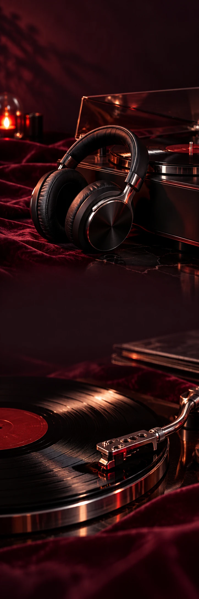

NOCTE
HuisparfumCollectiecampagne
NOCTE / AFTER THE NOISE
De dag uit.
De muziek aan.
Ontdek NOCTE NOCTE / VAN DICHTBIJ
Een avond.
Je eigen geluid.
De lamp wat lager. De eerste noten. Een plaat die je van begin tot eind wilt horen. Maak ruimte voor dat ene nummer, en voor alles wat erna komt.
01Opzetten
02Wegzakken
03Nog één track
Laat maar
even spelen.
Sommige nummers klinken beter als de wereld stil wordt.
Ontdek NOCTE